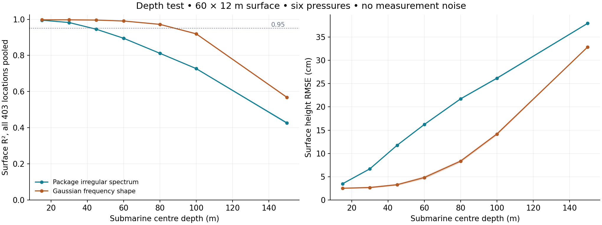
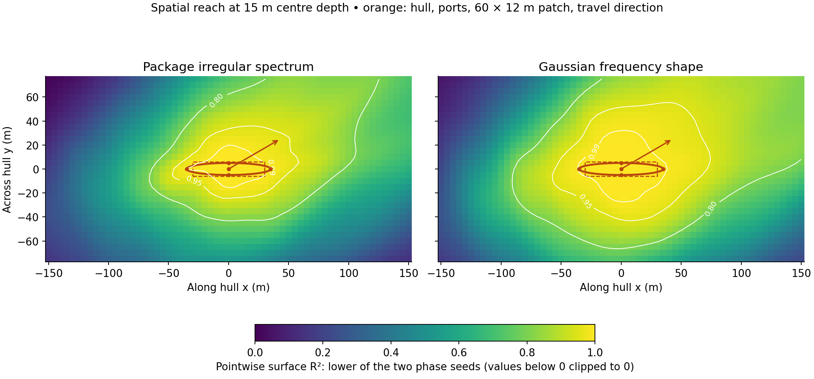

MDM3 · EXPLORATORY SIMULATION RESULTS · 15 OCTOBER 2026
How deep, and how far beyond the hull, can six pressures reconstruct individual waves?
Measured using the unchanged hybrid estimator and the independent CFDwavemaker source. Two single-system frequency shapes, two phase seeds each, no measurement noise, no crossing seas, no IMU. These are paired tests on the four existing sea realizations.
Read the two tests separately. The depth sweep holds the surface patch at 60 × 12 m. The spatial sweep holds centre depth at 15 m. They do not establish the combined accuracy of a large patch at a large depth.
Depth: the recovered surface gradually loses detail

Each range covers all four case/seed combinations. Worst-location R² is the least accurate of the 403 scored surface locations in each run. Shaded plot bands span two phase seeds per spectral shape; they are not confidence intervals. Depth means hull centre: the top port is 5 m shallower and the bottom port 5 m deeper.
There is no single physical maximum depth in this result. Short waves leave exponentially weaker pressure signatures at depth. The unchanged numerical stabilisation then suppresses information it cannot reliably invert; errors in the pressure-learned spectrum can also contribute. Lower stabilisation or a longer history may recover more in an ideal calculation, but these results do not demonstrate that improvement.
For an isolated deep-water wave component, the pressure amplitude relative to its surface value is exp(−4π² d / (g T²)). At 60 m, an 8-second wave retains about 2.3% while a 4-second wave retains only 0.000028%. This explains why a smooth reconstruction can still miss short-wave detail. This is the incident wave signal, before hull-motion contributions.
Spatial reach: accuracy varies strongly with location

All rectangles are centred on the hull and aligned with it. The 60 × 12 m benchmark retains its original 2 m along-hull × 1 m across-hull grid (403 points). Larger rectangles use a 5 m grid. The map uses the lower R² of the two phase seeds at each grid point, separately for each sea shape. Values between grid points are not independently checked. Pooled accuracy alone cannot certify every location.
The sensors constrain waves passing their limited footprint. Known dispersion and a pressure-learned statistical prior extend the estimate beyond that footprint, but distant lateral combinations remain ambiguous. Past measurements help some downstream locations more than upstream locations. A larger rendering is easy; a larger accurately measured region requires evidence like this map.
What entered the estimator
Only six current/past pressure readings, their timestamps, the assumed port geometry and the known nominal hull model/depth. The first 1,024 readings (8.5 minutes at 2 Hz) learn a statistical prior. The subsequent current-time estimate uses a 128-tap, 64-second pressure history. At every depth, statistics are learned again from that depth’s pressures. The spectrum family remains JONSWAP with fixed gamma and one directional system; the Gaussian source therefore tests a frequency-shape mismatch.
For spatial extension, the pressure record and its learned prior stay fixed. Only the requested output locations change. The evaluator obtains the true surface from the native external package; it supplies no phases or surface samples to the inverse. Causal batch predictions were checked against packet-by-packet streaming. The original 60 × 12 m spatial predictions and native reference surface were reproduced to numerical precision. All frozen source hashes and original pressure records were verified unchanged.
Limits of this evidence
CFDwavemaker supplies an independent implementation of linear Airy waves and incident pressure. It is not a full CFD solver. The forward simulation and inverse retain shared linear-wave, nominal hull-force, vehicle-dynamics and instrument assumptions. Sensor placement is assumed, not sponsor-verified. This does not measure real-hardware performance, nonlinear seas, noise robustness, changing seas, forward speed or wave-hull scattering. The two phase seeds do not establish a universal operating envelope.
These tests map the current method; no parameters were retuned for a better score. The next research step is to extend the causal wave-state estimator and compare it on fresh realizations, with a location-specific error estimate. A credible depth limit for hardware also needs actual sensor noise, resolution and model error.
CFDwavemaker source · MIT: linear wave pressure attenuation · Phase-resolved wave predictable zones
Depth results · Depth protocol · Spatial results · Spatial protocol · Original independent-wave replay · Experiment scripts